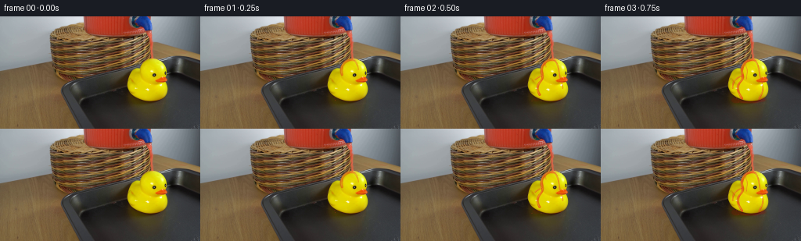
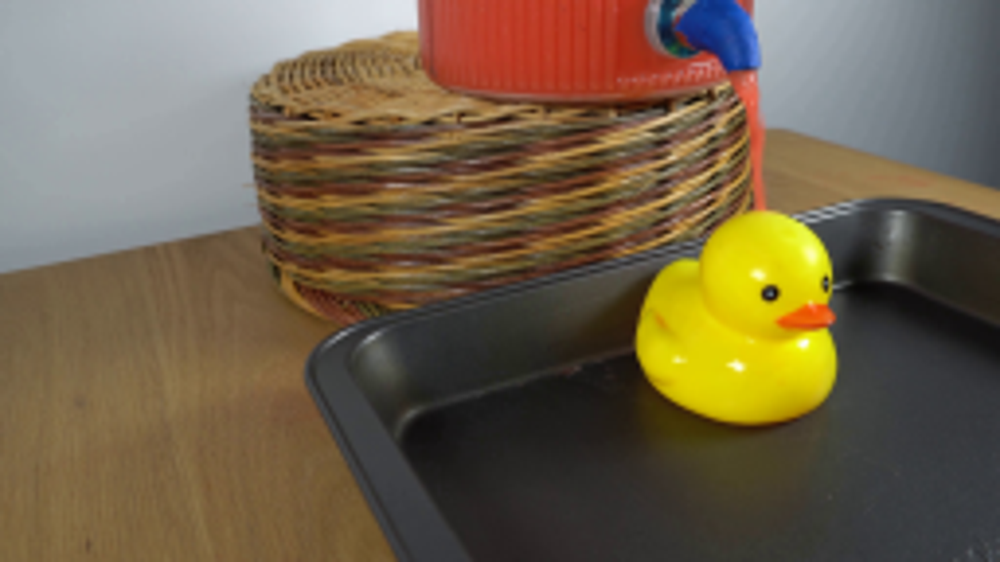
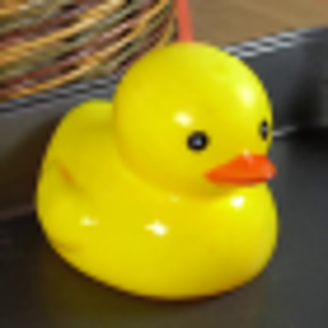
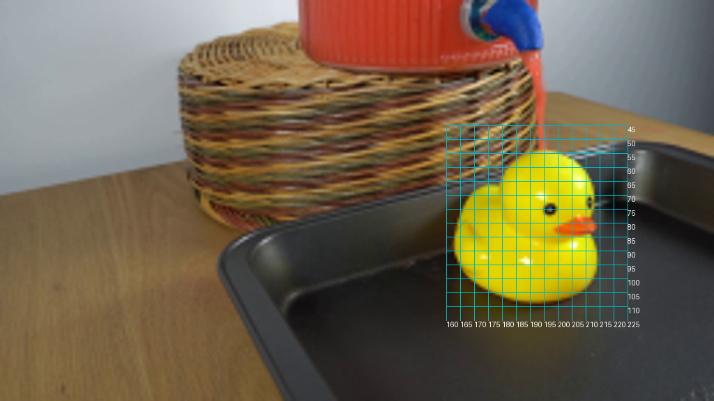
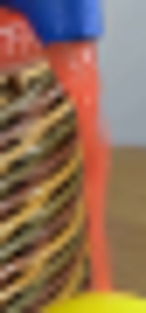
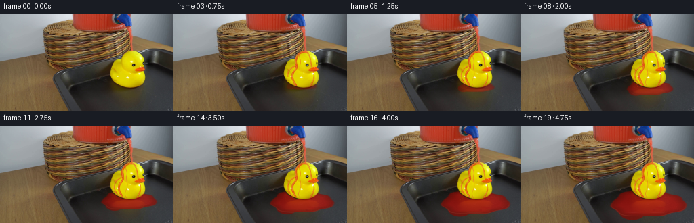
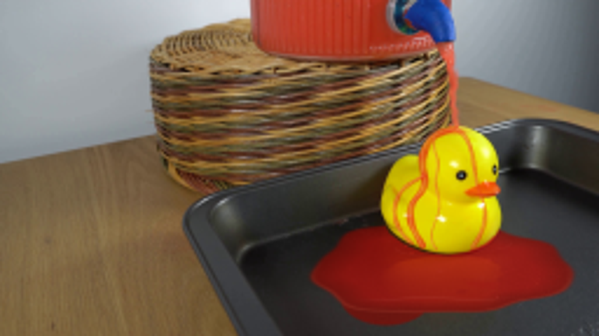
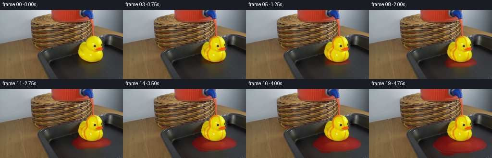

CODING AGENTS AS PIXEL WORLD MODELS
traex/GPT-6.1-Sol · 0085
点击播放 · 原生 RGB 像素
逐轮保存的候选
回放视频、检查图与代码变化。
每份候选均可单独播放。实际图片检查记录在下方工具轨迹中。
候选 01播放与检查图
点击播放 · 原生 RGB 像素


展开代码变化
--- 上一保存版本
+++ 本次保存版本
@@ -0,0 +1,162 @@
+from pathlib import Path
+import numpy as np
+from PIL import Image, ImageDraw
+import cv2
+from scipy.interpolate import CubicSpline
+from scipy.ndimage import gaussian_filter
+import artifact_io
+
+ROOT=Path(__file__).resolve().parent
+S=4; W=256; H=144
+src=np.asarray(Image.open(ROOT/'first_frame.png').convert('RGB'),dtype=np.uint8)
+base=cv2.resize(src.astype(np.float32),(W*S,H*S),interpolation=cv2.INTER_CUBIC)
+y,x=np.mgrid[0:H*S,0:W*S].astype(np.float32); x=(x+.5)/S; y=(y+.5)/S
+rng=np.random.default_rng(2531)
+noise=gaussian_filter(rng.normal(0,1,(H*S,W*S)),1.3)
+
+def polygon(points):
+ a=Image.new('L',(W*S,H*S)); ImageDraw.Draw(a).polygon([(round(u*S),round(v*S)) for u,v in points],fill=255)
+ return np.asarray(a,dtype=np.float32)/255
+
+# The existing rubber toy and the floor of the pan determine the occlusion.
+duck=polygon([(194,54),(185,56),(180,60),(178.3,65.8),(174,65.8),(170.5,67.5),(167.4,72),(164.3,80),(162.5,87),(163.2,94),(166.6,100),(173.5,105),(181,108),(191,109.2),(199,108),(207,104.5),(212,100),(214.5,93),(214.3,87),(212,83),(214,82),(214.3,79),(212,77),(212.5,73),(212.7,69),(210,62),(205,57),(199,54)])
+duck=gaussian_filter(duck,.6)
+floor=polygon([(103,112),(126,105),(151,96),(180,88),(206,83),(235,82),(256,91),(256,144),(117,144)])
+# Do not color the eyes and beak when a stream crosses their silhouette.
+yellow=np.clip((base[:,:,0]-base[:,:,2]-40)/65,0,1)*np.clip((base[:,:,1]-base[:,:,2]-45)/80,0,1)
+surface=duck*yellow
+
+def blend(img,color,alpha):
+ if np.ndim(alpha)==2: alpha=alpha[:,:,None]
+ return img*(1-alpha)+np.asarray(color,dtype=np.float32)*alpha
+
+def line_mask(points,widths,phase=0,progress=1):
+ p=np.asarray(points,float); d=np.r_[0,np.cumsum(np.linalg.norm(np.diff(p,axis=0),axis=1))]; d/=d[-1]
+ cs=CubicSpline(d,p,axis=0)
+ tt=np.linspace(0,max(.0001,min(progress,1)),260); pp=cs(tt)
+ a=Image.new('L',(W*S,H*S)); dr=ImageDraw.Draw(a)
+ for j in range(len(pp)-1):
+ xx,yy=pp[j]; xx2,yy2=pp[j+1]
+ wid=np.interp(tt[j],np.linspace(0,1,len(widths)),widths)*(1+.12*np.sin(tt[j]*27-phase*8))
+ dr.line([(int(xx*S),int(yy*S)),(int(xx2*S),int(yy2*S))],fill=255,width=max(1,round(wid*S)))
+ r=wid*S*.49
+ dr.ellipse((xx*S-r,yy*S-r,xx*S+r,yy*S+r),fill=255)
+ return gaussian_filter(np.asarray(a,dtype=np.float32)/255,.45)
+
+left=[(194.5,54.9),(190,56.2),(184.7,59),(181.3,64),(180.6,71),(181.6,77.2),(180.4,81.7),(176.9,86.2),(175.5,94),(177.7,100.1),(180.8,105.6)]
+front=[(195.7,55.7),(199.1,59),(201.4,64.5),(202.5,69.8),(203.3,75.4),(204.7,81.5),(206.5,86.5),(207.2,94.7),(204.8,101.5),(202.1,106)]
+branch=[(186,58.8),(185.7,63.8),(187.4,70.8),(186.3,76.9),(187.2,83.2),(187.8,89.2),(185.1,97.6),(186.6,106.8)]
+side=[(181.5,75),(178.2,77.1),(173.4,80.2),(170,84.7),(168.9,92.9),(172,100.1),(176,104.2)]
+
+# A shallow, irregular puddle expands continuously from runoff on both sides.
+def pool(t):
+ q=max(0,t-.28); spread=1-np.exp(-q/.95)
+ rx=7+48*(q/4.47)**.63; ry=2+18*(q/4.47)**.70
+ cx=192-4*(q/4.47); cy=105+10*(q/4.47)
+ theta=np.arctan2((y-cy)/ry,(x-cx)/rx)
+ rr=np.sqrt(((x-cx)/rx)**2+((y-cy)/ry)**2)
+ edge=1+.055*np.sin(theta*3+.7)+.032*np.sin(theta*7-1)+.015*np.cos(theta*11)
+ a=1/(1+np.exp(np.clip((rr-edge)*ry*S*1.3,-50,50)))
+ # A lower tongue and the runoff from the near-facing breast coalesce.
+ rx2=3+17*(q/4.47)**.75; ry2=2+11*(q/4.47)**.75
+ r2=np.sqrt(((x-(174-2*q))/rx2)**2+((y-(105+4.8*q))/ry2)**2)
+ a2=1/(1+np.exp(np.clip((r2-1)*min(rx2,ry2)*S*1.5,-50,50)))
+ # Small initial wetted contact ring.
+ a=np.maximum(a,a2*.98)*floor*(1-duck)*spread
+ return a,rr,edge
+
+frames=[src.copy()]
+for i in range(1,20):
+ t=i/4
+ img=base.copy()
+ # Sub-pixel fluctuations travel down the already flowing spout stream.
+ stream_mid=np.interp(y[:,0],[0,18,23,28,35,45,54,144],[188,189.6,191.2,192.7,193.5,193.7,194.1,194.1])[:,None]
+ window=np.exp(-((x-stream_mid)/3.4)**6)*np.clip((y-19)/4,0,1)*np.clip((55-y)/3,0,1)
+ dx=(.24*np.sin(y*1.2-t*15)+.16*np.sin(y*.46-t*9))*window
+ warped=cv2.remap(base,(x*S-.5+dx*S).astype(np.float32),(y*S-.5).astype(np.float32),cv2.INTER_LINEAR,borderMode=cv2.BORDER_REPLICATE)
+ img=img+(warped-base)*window[:,:,None]
+ # Dark red liquid on black metal, retaining underlying highlights and shading.
+ pa,rr,edge=pool(t)
+ depth=np.clip((edge-rr)*3.6,0,1)
+ lum=base.mean(2)
+ pc=np.zeros_like(img)
+ pc[:,:,0]=113+depth*37+(lum-42)*.53
+ pc[:,:,1]=16+depth*3+(lum-42)*.19
+ pc[:,:,2]=10+depth*4+(lum-42)*.16
+ pc+=noise[:,:,None]*1.2
+ # Reflect the yellow duck in the new glossy liquid.
+ ref_y=109-(y-109)*2.1
+ ref_x=x+.6*np.sin((y-110)*1.8-t*3.2)
+ ref=cv2.remap(base,(ref_x*S-.5).astype('float32'),(ref_y*S-.5).astype('float32'),cv2.INTER_LINEAR,borderMode=cv2.BORDER_REFLECT)
+ ref_a=np.exp(-np.maximum(y-110,0)/10)*np.clip((y-108)/3,0,1)*np.clip((133-y)/4,0,1)*np.exp(-((x-191)/26)**6)
+ pc[:,:,0]+=ref[:,:,0]*ref_a*.17
+ pc[:,:,1]+=ref[:,:,1]*ref_a*.12
+ pc[:,:,2]+=ref[:,:,2]*ref_a*.05
+ img=blend(img,pc,pa*.89)
+ # Raised meniscus at the irregular shore, including reflected window light.
+ rim=np.exp(-((rr-edge+.015)/.025)**2)*pa
+ img=blend(img,(231,103,76),rim*.18*np.clip((y-111)/13,0,1))
+ # Multiple advected circular wavefronts, strongly foreshortened by the viewpoint.
+ for k,(ox,oy) in enumerate([(178,106.2),(207.5,103.6)]):
+ age=(t+.12*k)%.73
+ rad=2+age*19
+ r=np.sqrt(((x-ox)/1.0)**2+((y-oy)/.33)**2)
+ ripple=np.exp(-((r-rad)/.55)**2)*(.16*(1-age/.85))
+ ripple*=pa*np.clip((y-oy+.5)/2,0,1)
+ img=blend(img,(245,130,109),ripple)
+ trough=np.exp(-((r-rad-.8)/.58)**2)*pa*.11*(1-age/.85)
+ img=blend(img,(81,9,7),trough)
+ # Small elongated reflections flicker in the surface without moving the setup.
+ sheen=np.exp(-((y-(128+.6*np.sin((x-140)*.15-t*3)))/.32)**2)*np.exp(-((x-186)/29)**4)*pa
+ img=blend(img,(219,152,133),sheen*.11)
+ # Thin translucent flows cross the dome and run down its curved rubber surfaces.
+ flowstrength=1-np.exp(-t*4.5)
+ flows=[(left,[2.0,3.6,3.1,2.4,2.8,2.3],.0,.78),
+ (front,[1.8,1.6,1.4,1.1,1.8,1.8],.10,.58),
+ (branch,[.8,1.0,.85,.55,.8],.40,.43),
+ (side,[1.3,1.6,1.7,1.3],.26,.60)]
+ wet=np.zeros((H*S,W*S),np.float32)
+ for n,(path,widths,delay,opacity) in enumerate(flows):
+ progress=np.clip((t-delay)/(.55 if n<2 else .8),0,1)
+ if progress<=0: continue
+ m=line_mask(path,widths,t+n*1.5,progress)*surface
+ wet=np.maximum(wet,m*opacity*flowstrength)
+ film=np.zeros_like(img)
+ film[:,:,0]=211+19*np.clip((base[:,:,0]-150)/110,0,1)
+ film[:,:,1]=38+base[:,:,1]*.10
+ film[:,:,2]=17+base[:,:,2]*.18
+ # Variable thickness gives striated, transparent liquid rather than paint.
+ thickness=.87+.13*np.sin(y*.65-t*14+n*2)
+ img=blend(img,film,m*opacity*thickness*flowstrength)
+ # One soft, off-center specular strand on each curved stream.
+ pathlight=[(px-.35,py-.1) for px,py in path]
+ sm=line_mask(pathlight,[max(.22,z*.14) for z in widths],t+n*1.5,progress)*surface*m
+ img=blend(img,(255,181,115),sm*.38*flowstrength)
+ # A spreading film at the point of impact, hugging the head's dome.
+ crown=np.exp(-(((x-194.5)/6.0)**2+((y-56.5)/1.35)**2)*1.6)*surface*flowstrength
+ img=blend(img,(236,71,24),crown*.60)
+ shine=np.exp(-(((x-195.4)/2.1)**2+((y-55.7)/.35)**2))*surface
+ img=blend(img,(255,181,122),shine*.40)
+ # Natural small beads from the impact and from runoff landing in the pan.
+ drops=Image.new('RGBA',(W*S,H*S)); dr=ImageDraw.Draw(drops)
+ for k in range(6):
+ life=.40+.045*(k%3); age=(t+k*.137)%life
+ vx=[-13,9,-18,14,-8,19][k]; vy=-11-k%3*2
+ xx=194.5+vx*age; yy=55+vy*age+38*age*age
+ # Above the roof, droplets are visible against the basket; on the roof they merge.
+ if yy>54.6: continue
+ r=.28+.08*(k%3)
+ dr.ellipse(((xx-r)*S,(yy-r*1.25)*S,(xx+r)*S,(yy+r*1.25)*S),fill=(230,89,52,185))
+ dr.ellipse(((xx-.08)*S,(yy-.13)*S,(xx+.06)*S,(yy+.05)*S),fill=(255,188,135,160))
+ for k in range(5):
+ age=(t+k*.193)%.58
+ xx=176+(-16+8*k)*age; yy=105-10*age+34*age*age
+ r=.26+.06*(k%2)
+ if xx>178 and yy<107: continue
+ dr.ellipse(((xx-r)*S,(yy-r*.6)*S,(xx+r)*S,(yy+r*.6)*S),fill=(213,53,29,160))
+ da=np.array(drops,dtype=np.float32); img=blend(img,da[:,:,:3],da[:,:,3]/255)
+ # Integration as image differences makes the fixed background exactly static.
+ delta=cv2.resize(img-base,(W,H),interpolation=cv2.INTER_AREA)
+ frames.append(np.clip(np.rint(src.astype(np.float32)+delta),0,255).astype(np.uint8))
+frames=np.stack(frames)
+artifact_io.save(frames,ROOT)
候选 02播放与检查图
点击播放 · 原生 RGB 像素

展开代码变化
--- 上一保存版本
+++ 本次保存版本
@@ -55,7 +55,7 @@
cx=192-4*(q/4.47); cy=105+10*(q/4.47)
theta=np.arctan2((y-cy)/ry,(x-cx)/rx)
rr=np.sqrt(((x-cx)/rx)**2+((y-cy)/ry)**2)
- edge=1+.055*np.sin(theta*3+.7)+.032*np.sin(theta*7-1)+.015*np.cos(theta*11)
+ edge=1+.035*np.sin(theta*3+.7)+.012*np.sin(theta*7-1)+.006*np.cos(theta*11)
a=1/(1+np.exp(np.clip((rr-edge)*ry*S*1.3,-50,50)))
# A lower tongue and the runoff from the near-facing breast coalesce.
rx2=3+17*(q/4.47)**.75; ry2=2+11*(q/4.47)**.75
@@ -80,9 +80,9 @@
depth=np.clip((edge-rr)*3.6,0,1)
lum=base.mean(2)
pc=np.zeros_like(img)
- pc[:,:,0]=113+depth*37+(lum-42)*.53
- pc[:,:,1]=16+depth*3+(lum-42)*.19
- pc[:,:,2]=10+depth*4+(lum-42)*.16
+ pc[:,:,0]=101+depth*28+(lum-42)*.65
+ pc[:,:,1]=14+depth*5+(lum-42)*.26
+ pc[:,:,2]=11+depth*6+(lum-42)*.22
pc+=noise[:,:,None]*1.2
# Reflect the yellow duck in the new glossy liquid.
ref_y=109-(y-109)*2.1
@@ -90,9 +90,12 @@
ref=cv2.remap(base,(ref_x*S-.5).astype('float32'),(ref_y*S-.5).astype('float32'),cv2.INTER_LINEAR,borderMode=cv2.BORDER_REFLECT)
ref_a=np.exp(-np.maximum(y-110,0)/10)*np.clip((y-108)/3,0,1)*np.clip((133-y)/4,0,1)*np.exp(-((x-191)/26)**6)
pc[:,:,0]+=ref[:,:,0]*ref_a*.17
- pc[:,:,1]+=ref[:,:,1]*ref_a*.12
+ pc[:,:,1]+=ref[:,:,1]*ref_a*.17
pc[:,:,2]+=ref[:,:,2]*ref_a*.05
- img=blend(img,pc,pa*.89)
+ # The tray's soft reflected illumination remains visible through the liquid.
+ sky=np.exp(-((x-232)/30)**2-((y-117)/15)**2)
+ pc+=sky[:,:,None]*np.array([28,22,20],np.float32)
+ img=blend(img,pc,pa*.88)
# Raised meniscus at the irregular shore, including reflected window light.
rim=np.exp(-((rr-edge+.015)/.025)**2)*pa
img=blend(img,(231,103,76),rim*.18*np.clip((y-111)/13,0,1))
@@ -111,14 +114,19 @@
img=blend(img,(219,152,133),sheen*.11)
# Thin translucent flows cross the dome and run down its curved rubber surfaces.
flowstrength=1-np.exp(-t*4.5)
- flows=[(left,[2.0,3.6,3.1,2.4,2.8,2.3],.0,.78),
- (front,[1.8,1.6,1.4,1.1,1.8,1.8],.10,.58),
- (branch,[.8,1.0,.85,.55,.8],.40,.43),
- (side,[1.3,1.6,1.7,1.3],.26,.60)]
+ flows=[(left,[2.0,3.1,3.0,2.3,2.8,2.0],.0,.59),
+ (front,[1.8,1.5,1.2,1.0,1.8,1.5],.10,.38),
+ (branch,[.6,.8,.65,.45,.6],.40,.26),
+ (side,[1.3,1.6,1.7,1.3],.26,.44)]
wet=np.zeros((H*S,W*S),np.float32)
for n,(path,widths,delay,opacity) in enumerate(flows):
progress=np.clip((t-delay)/(.55 if n<2 else .8),0,1)
if progress<=0: continue
+ # Traveling thickness undulations follow fixed gravity paths; roots stay anchored.
+ path=[(px+.48*np.sin(j*.85-t*7+n)*np.sin(np.pi*j/(len(path)-1)),py)
+ for j,(px,py) in enumerate(path)]
+ sheet=line_mask(path,[z*2.1 for z in widths],t+n*1.5,progress)*surface
+ img=blend(img,(235,112,27),sheet*opacity*.16*flowstrength)
m=line_mask(path,widths,t+n*1.5,progress)*surface
wet=np.maximum(wet,m*opacity*flowstrength)
film=np.zeros_like(img)
@@ -131,7 +139,7 @@
# One soft, off-center specular strand on each curved stream.
pathlight=[(px-.35,py-.1) for px,py in path]
sm=line_mask(pathlight,[max(.22,z*.14) for z in widths],t+n*1.5,progress)*surface*m
- img=blend(img,(255,181,115),sm*.38*flowstrength)
+ img=blend(img,(255,181,115),sm*.22*flowstrength)
# A spreading film at the point of impact, hugging the head's dome.
crown=np.exp(-(((x-194.5)/6.0)**2+((y-56.5)/1.35)**2)*1.6)*surface*flowstrength
img=blend(img,(236,71,24),crown*.60)
候选 03播放与检查图

可观测工具轨迹
实际执行的命令与返回图片。
命令 1exit 0
/bin/bash -lc "ls -la && cat prompt.txt && printf '\\n---RULES---\\n' && cat GENERATION_RULES.md"
命令 2exit 0
/bin/bash -lc "cat artifact_io.py && python - <<'PY'
from PIL import Image
im=Image.open('first_frame.png'); print(im.size); im.resize((1024,576)).save('.tmp/large.png')
PY"命令 3exit 0
/bin/bash -lc "python - <<'PY' import importlib.util for v in ['numpy','PIL','scipy','cv2']: print(v, bool(importlib.util.find_spec(v))) PY"
命令 4exit 0
/bin/bash -lc "python - <<'PY'
from PIL import Image
im=Image.open('first_frame.png');im.crop((155,45,225,115)).resize((560,560)).save('.tmp/duck.png')
PY"命令 5exit 0
/bin/bash -lc "python - <<'PY'
from PIL import Image,ImageDraw
im=Image.open('first_frame.png').resize((1024,576))
d=ImageDraw.Draw(im)
for x in range(160,226,5):
d.line((x*4,45*4,x*4,115*4),fill=(0,180,200),width=1);d.text((x*4,115*4),str(x),fill=(255,255,255))
for y in range(45,111,5):
d.line((160*4,y*4,225*4,y*4),fill=(0,180,200),width=1);d.text((225*4,y*4),str(y),fill='white')
im.save('.tmp/grid.png')
PY"命令 6exit 0
/bin/bash -lc "python - <<'PY'
from PIL import Image
Image.open('first_frame.png').crop((180,12,201,57)).resize((210,450)).save('.tmp/stream.png')
PY"命令 7exit 0
/bin/bash -lc "python - <<'PY'
from PIL import Image
import numpy as np
im=np.array(Image.open('first_frame.png'))
for y in [18,22,26,30,35,40,45,50,53]:
print(y, [(x,im[y,x].tolist()) for x in range(185,198)])
PY"命令 8exit 0
/bin/bash -lc "cat > generate.py <<'PY'
from pathlib import Path
import numpy as np
from PIL import Image, ImageDraw
import cv2
from scipy.interpolate import CubicSpline
from scipy.ndimage import gaussian_filter
import artifact_io
ROOT=Path(__file__).resolve().parent
S=4; W=256; H=144
src=np.asarray(Image.open(ROOT/'first_frame.png').convert('RGB'),dtype=np.uint8)
base=cv2.resize(src.astype(np.float32),(W*S,H*S),interpolation=cv2.INTER_CUBIC)
y,x=np.mgrid[0:H*S,0:W*S].astype(np.float32); x=(x+.5)/S; y=(y+.5)/S
rng=np.random.default_rng(2531)
noise=gaussian_filter(rng.normal(0,1,(H*S,W*S)),1.3)
def polygon(points):
a=Image.new('L',(W*S,H*S)); ImageDraw.Draw(a).polygon([(round(u*S),round(v*S)) for u,v in points],fill=255)
return np.asarray(a,dtype=np.float32)/255
# The existing rubber toy and the floor of the pan determine the occlusion.
duck=polygon([(194,54),(185,56),(180,60),(178.3,65.8),(174,65.8),(170.5,67.5),(167.4,72),(164.3,80),(162.5,87),(163.2,94),(166.6,100),(173.5,105),(181,108),(191,109.2),(199,108),(207,104.5),(212,100),(214.5,93),(214.3,87),(212,83),(214,82),(214.3,79),(212,77),(212.5,73),(212.7,69),(210,62),(205,57),(199,54)])
duck=gaussian_filter(duck,.6)
floor=polygon([(103,112),(126,105),(151,96),(180,88),(206,83),(235,82),(256,91),(256,144),(117,144)])
# Do not color the eyes and beak when a stream crosses their silhouette.
yellow=np.clip((base[:,:,0]-base[:,:,2]-40)/65,0,1)*np.clip((base[:,:,1]-base[:,:,2]-45)/80,0,1)
surface=duck*yellow
def blend(img,color,alpha):
if np.ndim(alpha)==2: alpha=alpha[:,:,None]
return img*(1-alpha)+np.asarray(color,dtype=np.float32)*alpha
def line_mask(points,widths,phase=0,progress=1):
p=np.asarray(points,float); d=np.r_[0,np.cumsum(np.linalg.norm(np.diff(p,axis=0),axis=1))]; d/=d[-1]
cs=CubicSpline(d,p,axis=0)
tt=np.linspace(0,max(.0001,min(progress,1)),260); pp=cs(tt)
a=Image.new('L',(W*S,H*S)); dr=ImageDraw.Draw(a)
for j in range(len(pp)-1):
xx,yy=pp[j]; xx2,yy2=pp[j+1]
wid=np.interp(tt[j],np.linspace(0,1,len(widths)),widths)*(1+.12*np.sin(tt[j]*27-phase*8))
dr.line([(int(xx*S),int(yy*S)),(int(xx2*S),int(yy2*S))],fill=255,width=max(1,round(wid*S)))
r=wid*S*.49
dr.ellipse((xx*S-r,yy*S-r,xx*S+r,yy*S+r),fill=255)
return gaussian_filter(np.asarray(a,dtype=np.float32)/255,.45)
left=[(194.5,54.9),(190,56.2),(184.7,59),(181.3,64),(180.6,71),(181.6,77.2),(180.4,81.7),(176.9,86.2),(175.5,94),(177.7,100.1),(180.8,105.6)]
front=[(195.7,55.7),(199.1,59),(201.4,64.5),(202.5,69.8),(203.3,75.4),(204.7,81.5),(206.5,86.5),(207.2,94.7),(204.8,101.5),(202.1,106)]
branch=[(186,58.8),(185.7,63.8),(187.4,70.8),(186.3,76.9),(187.2,83.2),(187.8,89.2),(185.1,97.6),(186.6,106.8)]
side=[(181.5,75),(178.2,77.1),(173.4,80.2),(170,84.7),(168.9,92.9),(172,100.1),(176,104.2)]
# A shallow, irregular puddle expands continuously from runoff on both sides.
def pool(t):
q=max(0,t-.28); spread=1-np.exp(-q/.95)
rx=7+48*(q/4.47)**.63; ry=2+18*(q/4.47)**.70
cx=192-4*(q/4.47); cy=105+10*(q/4.47)
theta=np.arctan2((y-cy)/ry,(x-cx)/rx)
rr=np.sqrt(((x-cx)/rx)**2+((y-cy)/ry)**2)
edge=1+.055*np.sin(theta*3+.7)+.032*np.sin(theta*7-1)+.015*np.cos(theta*11)
a=1/(1+np.exp(np.clip((rr-edge)*ry*S*1.3,-50,50)))
# A lower tongue and the runoff from the near-facing breast coalesce.
rx2=3+17*(q/4.47)**.75; ry2=2+11*(q/4.47)**.75
r2=np.sqrt(((x-(174-2*q))/rx2)**2+((y-(105+4.8*q))/ry2)**2)
a2=1/(1+np.exp(np.clip((r2-1)*min(rx2,ry2)*S*1.5,-50,50)))
# Small initial wetted contact ring.
a=np.maximum(a,a2*.98)*floor*(1-duck)*spread
return a,rr,edge
frames=[src.copy()]
for i in range(1,20):
t=i/4
img=base.copy()
# Sub-pixel fluctuations travel down the already flowing spout stream.
stream_mid=np.interp(y[:,0],[0,18,23,28,35,45,54,144],[188,189.6,191.2,192.7,193.5,193.7,194.1,194.1])[:,None]
window=np.exp(-((x-stream_mid)/3.4)**6)*np.clip((y-19)/4,0,1)*np.clip((55-y)/3,0,1)
dx=(.24*np.sin(y*1.2-t*15)+.16*np.sin(y*.46-t*9))*window
warped=cv2.remap(base,(x*S-.5+dx*S).astype(np.float32),(y*S-.5).astype(np.float32),cv2.INTER_LINEAR,borderMode=cv2.BORDER_REPLICATE)
img=img+(warped-base)*window[:,:,None]
# Dark red liquid on black metal, retaining underlying highlights and shading.
pa,rr,edge=pool(t)
depth=np.clip((edge-rr)*3.6,0,1)
lum=base.mean(2)
pc=np.zeros_like(img)
pc[:,:,0]=113+depth*37+(lum-42)*.53
pc[:,:,1]=16+depth*3+(lum-42)*.19
pc[:,:,2]=10+depth*4+(lum-42)*.16
pc+=noise[:,:,None]*1.2
# Reflect the yellow duck in the new glossy liquid.
ref_y=109-(y-109)*2.1
ref_x=x+.6*np.sin((y-110)*1.8-t*3.2)
ref=cv2.remap(base,(ref_x*S-.5).astype('float32'),(ref_y*S-.5).astype('float32'),cv2.INTER_LINEAR,borderMode=cv2.BORDER_REFLECT)
ref_a=np.exp(-np.maximum(y-110,0)/10)*np.clip((y-108)/3,0,1)*np.clip((133-y)/4,0,1)*np.exp(-((x-191)/26)**6)
pc[:,:,0]+=ref[:,:,0]*ref_a*.17
pc[:,:,1]+=ref[:,:,1]*ref_a*.12
pc[:,:,2]+=ref[:,:,2]*ref_a*.05
img=blend(img,pc,pa*.89)
# Raised meniscus at the irregular shore, including reflected window light.
rim=np.exp(-((rr-edge+.015)/.025)**2)*pa
img=blend(img,(231,103,76),rim*.18*np.clip((y-111)/13,0,1))
# Multiple advected circular wavefronts, strongly foreshortened by the viewpoint.
for k,(ox,oy) in enumerate([(178,106.2),(207.5,103.6)]):
age=(t+.12*k)%.73
rad=2+age*19
r=np.sqrt(((x-ox)/1.0)**2+((y-oy)/.33)**2)
ripple=np.exp(-((r-rad)/.55)**2)*(.16*(1-age/.85))
ripple*=pa*np.clip((y-oy+.5)/2,0,1)
img=blend(img,(245,130,109),ripple)
trough=np.exp(-((r-rad-.8)/.58)**2)*pa*.11*(1-age/.85)
img=blend(img,(81,9,7),trough)
# Small elongated reflections flicker in the surface without moving the setup.
sheen=np.exp(-((y-(128+.6*np.sin((x-140)*.15-t*3)))/.32)**2)*np.exp(-((x-186)/29)**4)*pa
img=blend(img,(219,152,133),sheen*.11)
# Thin translucent flows cross the dome and run down its curved rubber surfaces.
flowstrength=1-np.exp(-t*4.5)
flows=[(left,[2.0,3.6,3.1,2.4,2.8,2.3],.0,.78),
(front,[1.8,1.6,1.4,1.1,1.8,1.8],.10,.58),
(branch,[.8,1.0,.85,.55,.8],.40,.43),
(side,[1.3,1.6,1.7,1.3],.26,.60)]
wet=np.zeros((H*S,W*S),np.float32)
for n,(path,widths,delay,opacity) in enumerate(flows):
progress=np.clip((t-delay)/(.55 if n<2 else .8),0,1)
if progress<=0: continue
m=line_mask(path,widths,t+n*1.5,progress)*surface
wet=np.maximum(wet,m*opacity*flowstrength)
film=np.zeros_like(img)
film[:,:,0]=211+19*np.clip((base[:,:,0]-150)/110,0,1)
film[:,:,1]=38+base[:,:,1]*.10
film[:,:,2]=17+base[:,:,2]*.18
# Variable thickness gives striated, transparent liquid rather than paint.
thickness=.87+.13*np.sin(y*.65-t*14+n*2)
img=blend(img,film,m*opacity*thickness*flowstrength)
# One soft, off-center specular strand on each curved stream.
pathlight=[(px-.35,py-.1) for px,py in path]
sm=line_mask(pathlight,[max(.22,z*.14) for z in widths],t+n*1.5,progress)*surface*m
img=blend(img,(255,181,115),sm*.38*flowstrength)
# A spreading film at the point of impact, hugging the head's dome.
crown=np.exp(-(((x-194.5)/6.0)**2+((y-56.5)/1.35)**2)*1.6)*surface*flowstrength
img=blend(img,(236,71,24),crown*.60)
shine=np.exp(-(((x-195.4)/2.1)**2+((y-55.7)/.35)**2))*surface
img=blend(img,(255,181,122),shine*.40)
# Natural small beads from the impact and from runoff landing in the pan.
drops=Image.new('RGBA',(W*S,H*S)); dr=ImageDraw.Draw(drops)
for k in range(6):
life=.40+.045*(k%3); age=(t+k*.137)%life
vx=[-13,9,-18,14,-8,19][k]; vy=-11-k%3*2
xx=194.5+vx*age; yy=55+vy*age+38*age*age
# Above the roof, droplets are visible against the basket; on the roof they merge.
if yy>54.6: continue
r=.28+.08*(k%3)
dr.ellipse(((xx-r)*S,(yy-r*1.25)*S,(xx+r)*S,(yy+r*1.25)*S),fill=(230,89,52,185))
dr.ellipse(((xx-.08)*S,(yy-.13)*S,(xx+.06)*S,(yy+.05)*S),fill=(255,188,135,160))
for k in range(5):
age=(t+k*.193)%.58
xx=176+(-16+8*k)*age; yy=105-10*age+34*age*age
r=.26+.06*(k%2)
if xx>178 and yy<107: continue
dr.ellipse(((xx-r)*S,(yy-r*.6)*S,(xx+r)*S,(yy+r*.6)*S),fill=(213,53,29,160))
da=np.array(drops,dtype=np.float32); img=blend(img,da[:,:,:3],da[:,:,3]/255)
# Integration as image differences makes the fixed background exactly static.
delta=cv2.resize(img-base,(W,H),interpolation=cv2.INTER_AREA)
frames.append(np.clip(np.rint(src.astype(np.float32)+delta),0,255).astype(np.uint8))
frames=np.stack(frames)
artifact_io.save(frames,ROOT)
PY
python generate.py"命令 9exit 0
/bin/bash -lc "python - <<'PY'
from PIL import Image
Image.open('frames/19.png').resize((1024,576)).save('.tmp/end.png')
PY"命令 10exit 0
/bin/bash -lc "cp inspection.png .tmp/inspection_v1.png
python - <<'PY'
p='generate.py'
s=open(p).read()
s=s.replace(\".055*np.sin(theta*3+.7)+.032*np.sin(theta*7-1)+.015*np.cos(theta*11)\",\".035*np.sin(theta*3+.7)+.012*np.sin(theta*7-1)+.006*np.cos(theta*11)\")
s=s.replace(\"pc[:,:,0]=113+depth*37+(lum-42)*.53\",\"pc[:,:,0]=101+depth*28+(lum-42)*.65\")
s=s.replace(\"pc[:,:,1]=16+depth*3+(lum-42)*.19\",\"pc[:,:,1]=14+depth*5+(lum-42)*.26\")
s=s.replace(\"pc[:,:,2]=10+depth*4+(lum-42)*.16\",\"pc[:,:,2]=11+depth*6+(lum-42)*.22\")
s=s.replace(\"pc[:,:,1]+=ref[:,:,1]*ref_a*.12\",\"pc[:,:,1]+=ref[:,:,1]*ref_a*.17\")
s=s.replace(\"img=blend(img,pc,pa*.89)\",\"\"\"# The tray's soft reflected illumination remains visible through the liquid.
sky=np.exp(-((x-232)/30)**2-((y-117)/15)**2)
pc+=sky[:,:,None]*np.array([28,22,20],np.float32)
img=blend(img,pc,pa*.88)\"\"\")
s=s.replace(\"(left,[2.0,3.6,3.1,2.4,2.8,2.3],.0,.78)\",\"(left,[2.0,3.1,3.0,2.3,2.8,2.0],.0,.59)\")
s=s.replace(\"(front,[1.8,1.6,1.4,1.1,1.8,1.8],.10,.58)\",\"(front,[1.8,1.5,1.2,1.0,1.8,1.5],.10,.38)\")
s=s.replace(\"(branch,[.8,1.0,.85,.55,.8],.40,.43)\",\"(branch,[.6,.8,.65,.45,.6],.40,.26)\")
s=s.replace(\"(side,[1.3,1.6,1.7,1.3],.26,.60)\",\"(side,[1.3,1.6,1.7,1.3],.26,.44)\")
s=s.replace(\"m=line_mask(path,widths,t+n*1.5,progress)*surface\", \"\"\"# Traveling thickness undulations follow fixed gravity paths; roots stay anchored.
path=[(px+.48*np.sin(j*.85-t*7+n)*np.sin(np.pi*j/(len(path)-1)),py)
for j,(px,py) in enumerate(path)]
sheet=line_mask(path,[z*2.1 for z in widths],t+n*1.5,progress)*surface
img=blend(img,(235,112,27),sheet*opacity*.16*flowstrength)
m=line_mask(path,widths,t+n*1.5,progress)*surface\"\"\")
s=s.replace(\"sm*.38*flowstrength\", \"sm*.22*flowstrength\")
open(p,'w').write(s)
PY
python generate.py"命令 11exit 0
/bin/bash -lc "command -v ffmpeg || true; python - <<'PY'
import numpy as np
from PIL import Image
p=np.load('pixels.npz')['pixels']; assert p.shape == (144,256,20)
a=np.asarray(Image.open('frames/00.png')); b=np.asarray(Image.open('first_frame.png')); assert np.array_equal(a,b)
print('Verified: 20 RGB frames, 256Ã144; first frame identical.')
PY"视觉工具实际返回图片 1

视觉工具实际返回图片 2

视觉工具实际返回图片 3

视觉工具实际返回图片 4

视觉工具实际返回图片 5

视觉工具实际返回图片 6

视觉工具实际返回图片 7

保存候选 3 份；完成命令 11 次；可验证图片返回 7 张。原始 API 响应与完整日志保留在本地。